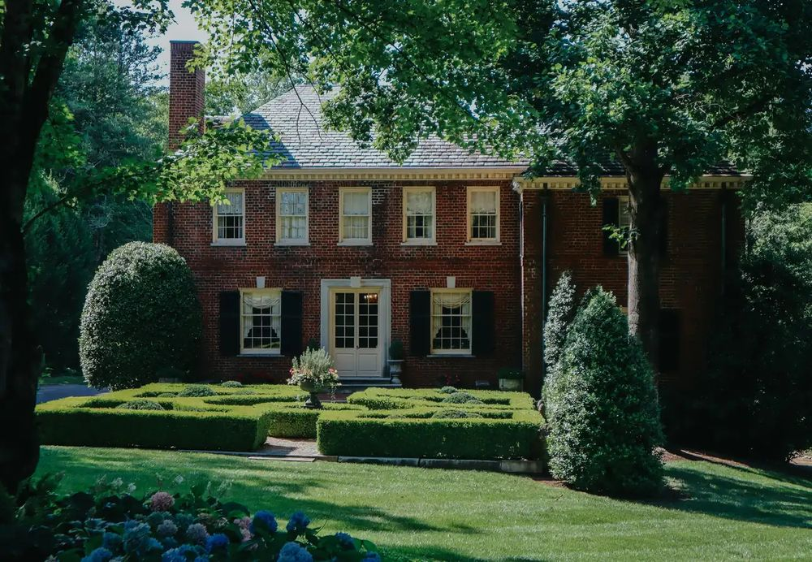

Property Tax
Forsyth County Property Tax and Homestead Exemption
How the bill is figured, who sets each part, which exemptions apply and when to apply.
Your Tax Bill
How a Forsyth County Property Tax Bill Is Figured
Your Forsyth County property tax bill starts with your home's assessed value, applies millage rates to it and reflects any exemptions you have.
Georgia assesses property at 40% of its fair market value on January 1 (O.C.G.A. 48-5-7; see the Georgia Department of Revenue valuation page). A millage rate is the tax per $1,000 of assessed value, and your bill carries several of them, set by different bodies.
This page explains the pieces for Forsyth County. It is not tax advice. Confirm the numbers for your own home with the Tax Commissioner, a tax professional or a Georgia real estate attorney.

Who Does What
Who Sets Your Value, Your Rate and Your Bill
Four bodies share the work, and each one answers a different question about your bill.
- Board of Assessors: sets the value of your home.
- Board of Commissioners: adopts the county millage rates.
- Board of Education: sets the school millage rate. Its district is Forsyth County Schools.
- Tax Commissioner: sends the bill and collects the payment.
Millage Rates
Forsyth County's Millage Rates for 2026
These are the county's own 2026 rates, the parts of the bill the Board of Commissioners adopts.
As of 2026, from the county's notice of its intent to adopt a rollback millage rate:
- Maintenance and operations: 4.727, a rollback rate adopted August 6, 2026
- Bond: 0.300
- Fire: 2.805
The school rate is set separately by the Board of Education, and the final 2026 school rate was not confirmed when this page was written, so no total is printed here. The Tax Commissioner can give you the total for your address. The Tax Commissioner reports that 2026 bills are available and due November 15, 2026. Rates change every year.

Homestead and More
Exemptions That Lower a Forsyth County Bill
These are 2026 amounts from the state and from the Forsyth County Board of Assessors. They change, so check the current terms before you apply.
- State homestead: $2,000 off the assessed value of a home you own and live in on January 1 (O.C.G.A. 48-5-44; Georgia Department of Revenue).
- Forsyth County regular homestead: $8,000 off the value used for county maintenance and operations and for fire. The school and state portions get $2,000.
- A floating freeze on the value used for county maintenance and operations and for fire is also available.
- Age 65 by January 1: a full exemption from school tax.
- Age 62: income-based school tax exemptions.
- Age 65 with gross income of $40,000 or less: the regular exemption doubles, to $16,000.
Applying
How and When to Apply for the Homestead Exemption
You can apply any time of year, but to count for that tax year, apply by April 1 or within the 45-day assessment appeal window.
You need a Georgia ID that matches the home's address and the last four digits of your Social Security number.
The online portal reopens December 21, 2026. Otherwise, apply in person or by notarized mail at the Board of Assessors, 426 Canton Hwy, or at the Tax Commissioner. The homestead exemptions page has the forms and the current steps.
The exemption renews automatically. Reapply if the names on the deed change. If you buy a home, apply in your own name.
Keep Reading
Buying, Programs and Selling in Georgia
Questions
Quick Answers About Forsyth County Property Tax
Do I have to reapply for the homestead exemption every year?
No. It renews automatically. Reapply if the names on the deed change.
When is my 2026 Forsyth County property tax bill due?
The Tax Commissioner lists November 15, 2026 for 2026 bills. Check your own bill for the amount.
Why does this page show no total tax rate?
The school millage is set separately by the Board of Education, and the final 2026 school rate was not confirmed when this page was written. The Tax Commissioner can give you the total for your address.
I am buying a home with a homestead exemption. Does it carry over?
Buyers reapply for the homestead exemption in their own names. The state exemption goes to a home you own and live in on January 1.
Resources
Sources
Figures on this page are the sources' own, as of 2026. Rates and limits change, so check the source for the current number.
- Forsyth County Board of AssessorsWho sets your home's value.
- Forsyth County Board of Assessors: Homestead and Other ExemptionsThe exemptions, the forms and how to apply.
- Forsyth County Tax Commissioner: Property TaxesYour bill and how to pay it.
- Forsyth County: 2026 Rollback Millage RateThe county's 2026 maintenance and operations rate.
- Georgia Department of Revenue: Property Tax ValuationHow Georgia assesses property.
- Georgia Department of Revenue: Homestead ExemptionsThe state homestead exemption.
Team Giarraffa
Talk With Rhonda and Louis About Your Forsyth County Move
Tell them what you are planning, and they will help you work out the next steps.